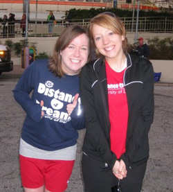

The Beginnings
It all began with a University of Dayton Student looking for a way to get more involved in the Dayton community. This student, Katie Przybysz (UD, 2007), was searching for a nonprofit organization that she could really get involved with. In the spring of 2006, she found A Special Wish Foundation (ASW). After speaking with Ilene, Executive Director, she knew she had found exactly what she was looking for. From day one, she was blown away by how hard the staff worked to make every wish come true. It didn’t take long into her internship before everyone’s selfless attitude and positivity had her hooked.
In November, as her internship neared an end, she serendipitously ran into Anna Young (UD, 2008) and began telling her about the internship. As Katie was telling her that 60 percent of the wishes granted by A Special Wish are to go to the “most magical place on earth,” Anna interrupted to say that her and her roommates had been planning on running the Disney Marathon but hadn’t found “the right” cause to do it for yet.
It seemed like it was just meant to be. Katie, Anna, and Anna’s roommate, Lisa Monnot (UD, 2008), began drawing up plans to form an organization that would help students, faculty, and staff train for a marathon or half-marathon, all while fundraising for ASW. The idea was that ASW would send a wish child to Disney World for their "wish" at the same time as the marathon weekend.
Everything quickly began to fall into place in the spring of 2007 including their biggest obstacle, registration with Disney. With plans in place, they began planning fundraisers for the fall.